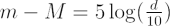
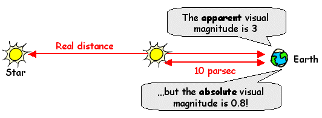

The absolute magnitude of a star, M is the magnitude the star would have if it was placed at a distance of 10 parsecs from Earth. By considering stars at a fixed distance, astronomers can compare the real (intrinsic) brightnesses of different stars. The term absolute magnitude usually refers to the absolute visual magnitude, Mv of the star, even though the term ‘visual’ really restricts the measurement of the brightness to the wavelength range between 4,000 and 7,000 Angstroms.
To convert the observed brightness of a star (the apparent magnitude, m) to an absolute magnitude, we need to know the distance, d, to the star. Alternatively, if we know the distance and the apparent magnitude of a star, we can calculate its absolute magnitude. Both calculations are made using:

with m – M known as the distance modulus and d measured in parsecs.

The apparent magnitudes, absolute magnitudes and distances for selected stars are listed below:
| Star | mv | Mv | d (pc) |
| Sun | -26.8 | 4.83 | 0 |
| Alpha Centauri | -0.3 | 4.1 | 1.3 |
| Canopus | -0.72 | -3.1 | 30.1 |
| Rigel | 0.14 | -7.1 | 276.1 |
| Deneb | 1.26 | -7.1 | 490.8 |
Although Rigel appears brighter than Deneb in the sky (it has a smaller apparent magnitude), they actually have the same real brightness (their absolute magnitudes are the same). The apparent difference in brightness arises because Deneb is much further away than Rigel.
See also: electromagnetic spectrum.